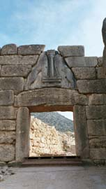

Mycenaean civilization in Greece until 1100 BCThe Mycenaean civilization in Greece takes its name from the city of Mycenae. It describes the culture which developed on mainland Greece in the late Bronze Age. It was a warrior culture and the Mycenaeans built huge fortified towns all over mainland Greece. They also enjoyed hunting. The Mycenaeans were Greek and worshipped many of the same gods as later Greeks. Sometime after 1200 BC the Mycenaean civilization went into decline. Many of their settlements were abandoned or destroyed. 
The lion gate in Mycenae
|